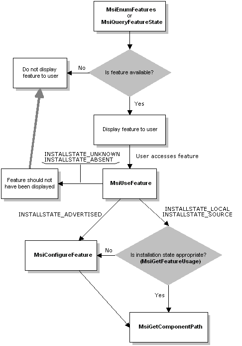

description: There are several functions an application must call to request features.
ms.assetid: 5253c6f0-316f-4f24-b0c0-951db8d16745
title: Requesting a Feature
ms.topic: article
ms.date: 05/31/2018
Requesting a Feature
There are several functions an application must call to request features. Before requesting a feature, the application must ensure that the feature is installed. If the application calls MsiUseFeature before the application accesses a feature, the application can use the information returned to maintain usage metrics.
To request a feature
- Call the MsiEnumFeatures or the MsiQueryFeatureState function if you want to determine the availability of a feature without incrementing the usage count.
- Indicate your application's intent to use a feature by calling the MsiUseFeature function.
- Determine file locations by calling the MsiGetComponentPath function.
- Configure the feature by calling the MsiConfigureFeature function.
- Obtain usage metrics that your application can use by calling the MsiGetFeatureUsage function.
The following diagram illustrates the feature request model.

Â
Â